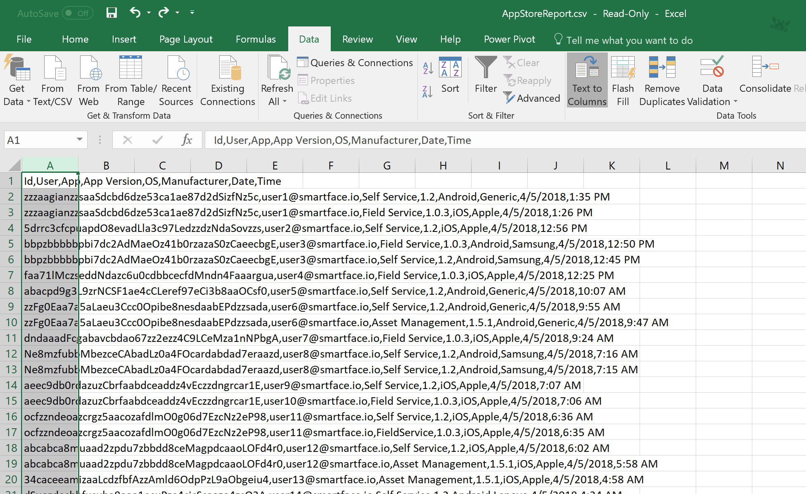
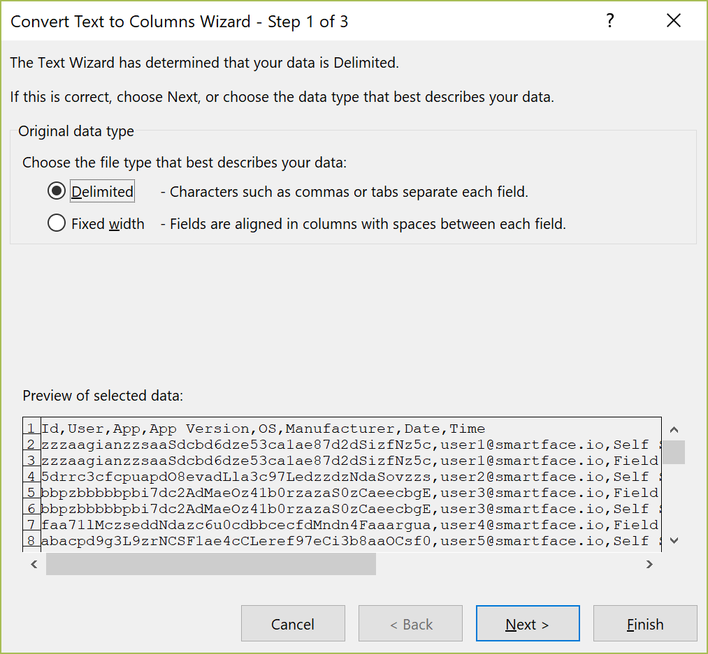
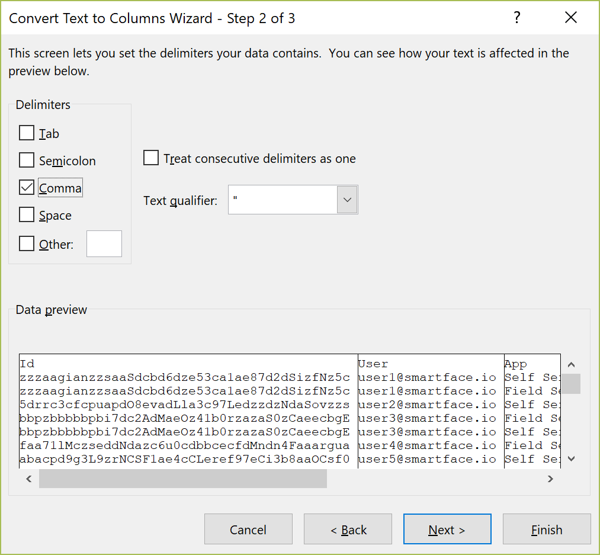
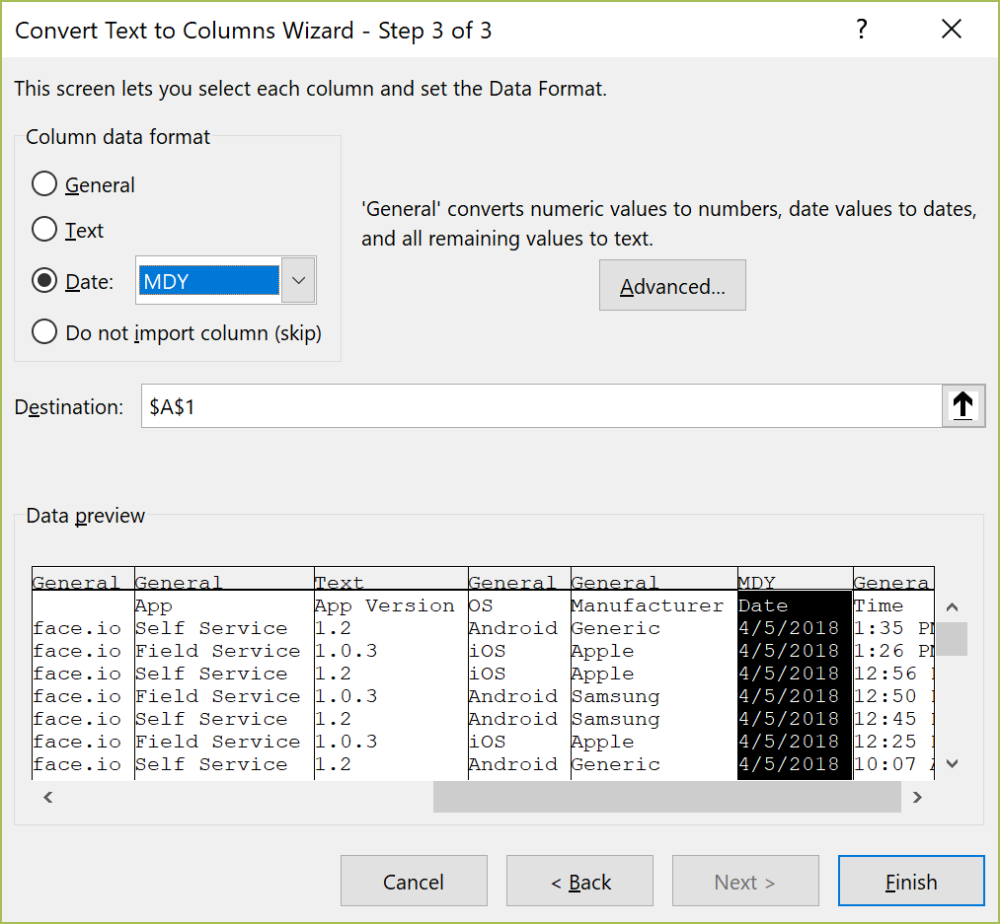
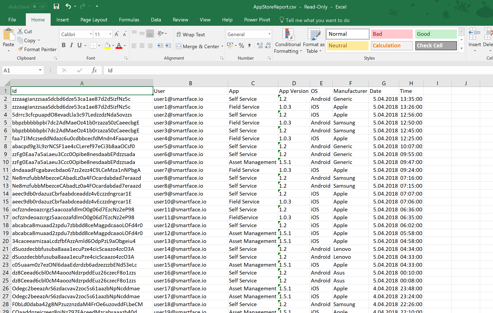

The Enterprise App Store reports are exported in standard CSV format that can be processed with various spreadsheet applications. Due to the spreadsheet interpretation and locale differences across regions and operating systems, CSV format is preferred for global compatibility.
This document outlines how to process the CSV file in Microsoft Excel to be used in further data operations.
Starting the Text to Columns Wizard
The CSV file produced is in a comma-separated format. Some spreadsheet applications can parse this file automatically, but Microsoft Excel leaves the parsing up to the user through the "Text to Columns" feature.
To start the wizard, open the CSV file in Excel and select the first column by pressing the column name.
From the Data tab, press the Text to Columns button.

"Convert Text to Columns Wizard" will be displayed.
In the first step, select "Delimited" and press "Next".

In the second step, select "Comma" under "Delimiters". You will see the preview of the data below.
If everything looks good, press "Next".

In the final step, we will ensure that the date and time are processed correctly according to your locale and also prevent the version field automatically parsed as number.
- First, click on the App Version column and select Text as the "Column data format". Your selection will appear on top of the column preview.
- If you encounter similar parsing issues with other columns, you may also specify their format as text to keep the data intact. You can select multiple columns for this purpose.
- Then, select the Date column and specify Date: MDY as the "Column data format". This ensures that the US date format is converted to the locale used in your Excel instance.
The column formats should look like below before finishing the wizard.
If everything looks good, press Finish.

The file will now be parsed in your own locale. In the example below, the data is shown in European format.
Please note that the time field may also require additional formatting after the wizard is complete, depending on the locale.

Tips
- If there is an issue, using the undo command after the wizard will return the file to its initial stage.
- To automate these steps, you can also record or develop an Excel macro.
- Don't forget to save your file in Excel format to preserve your changes.